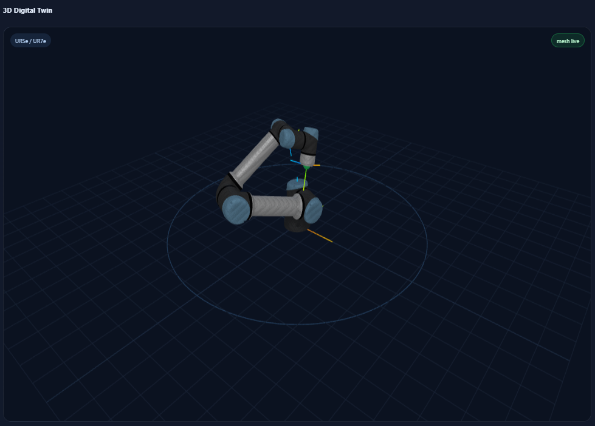
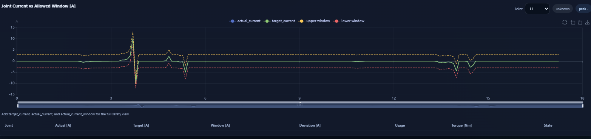

웹 인터페이스 가이드
개요
웹 인터페이스는 빠른 점검과 시각화를 목적으로 합니다. 다음 기능이 함께 들어 있습니다.
실시간 값 표시
관절 및 TCP 차트
mesh 기반 디지털 트윈
GP 레지스터 쓰기
current-window 모니터링
이벤트 로그
CSV 기록 및 snapshot export
스크린샷
{kind=link}

Mesh 기반 디지털 트윈 화면.
{kind=link}

Joint current versus allowed window 모니터.
실행 방법
python ./run_dashboard.py
브라우저에서 아래 주소를 엽니다.
http://127.0.0.1:8008
주요 패널
상태 카드
상단에는 설정된 host, 요청한 RTDE 주파수, 실제 읽기 속도, 연결 상태가 표시됩니다.
Live values
Live table은 현재 설정된 RTDE 필드의 최신값을 보여줍니다. 필드명은 공식 RTDE 이름과 최대한 가깝게 유지됩니다.
차트
관절, TCP, current-window 데이터를 시간축으로 볼 수 있습니다. 원시 보관용이라기보다 운영자 이해와 디버깅에 더 적합합니다.
디지털 트윈
디지털 트윈은 actual_q 를 따라 움직입니다. actual_TCP_pose 가 있으면 TCP 관련 overlay도 표시할 수 있습니다.
GP write 패널
현재 설정에 input_*_register_* 필드가 포함되어 있으면, 웹 인터페이스에서 해당 GP input을 직접 쓸 수 있습니다.
Current-window 모니터
다음 필드가 있으면:
target_currentactual_currentactual_current_window
웹 인터페이스는 joint별 actual current, target current, allowed window, 그리고 derived usage ratio를 함께 보여줍니다.
권장 필드 조합
디지털 트윈 전용:
ROBOT_FIELDS = ["timestamp", "actual_q", "actual_TCP_pose"]
디지털 트윈 + I/O:
ROBOT_FIELDS = [
"timestamp",
"actual_q",
"actual_TCP_pose",
"actual_digital_input_bits",
"actual_digital_output_bits",
]
Current-window 모니터:
ROBOT_FIELDS = [
"timestamp",
"actual_q",
"actual_TCP_pose",
"target_current",
"actual_current",
"actual_current_window",
]